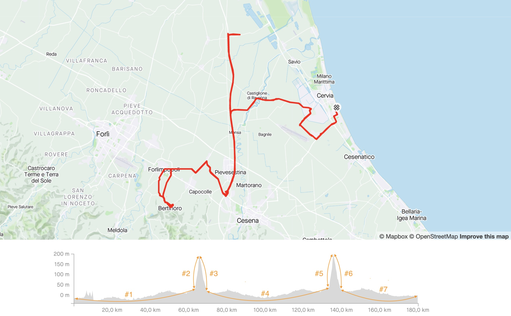
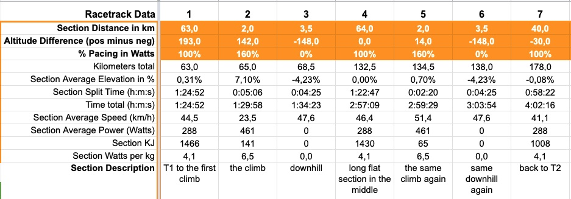

Long-distance Triathlon & The Bike Split - Pacing for competitive Age-Groupers and for Pros!

Q: Can I bike faster than originally planned? Will it be the first time I am not suffering at the Marathon? A: To be honest. I don´t know!
But what I certainly know: It is possible to predict your bike split for a long-distance triathlon like at an Ironman. With the right tooling your pacing strategy will be shifted to a completely new level especially when those classical approaches like results from the past, average speed or your gut feeling is throwing more questions than answers.
Based on power data Jürgen Pansy developed, through meticulous work, a nice toolkit. I can´t hardly remember when I saw such a well thought and detailed spreadsheet. Great stuff. Awesome work. Thanks again.
Back in 2015 I finally applied my successful race strategy in one of the most challenging bike races through Europes alps: The Ötztaler Radmarathon. It helped me to predict my split times quite well and accurate for those 238 kilometers with its suffering 4 climbs and 5500 meter of altitude. In 2019 I finished my first Ironman and months later I stumpled again over that piece of knowledge and expertise. I took the chance, utilized it and made it generic adjustable for any kind of long distance racing especially for triathlon or Ironman.
The Toolkit for Pacing your Bike-Split in a long-distance Triathlon like an Ironman
Which parameters do I need to get started?
- Your body weight
- The weight of your final bike setup, this includes bottles, spare kit and race day nutrition.
- Target racing/pacing power data. In worst case this could be derived from your Functional Threshold Power. We´re getting into this issue below. Please read this section carefully as it heavily impacts the accuracy.
- Proper knowledge about the race track with all it´s details like climbs, downhill or flat sections and so on.
- Optional parameters like: Your CdA, the drag coefficient, or the temperature are also helpful and playing their role.
- The CdA for example is the most critical one and effects the overall prediction quite heavily. Here are some typical CdA Values:
| CdA-Value | Hand Position | Arm Position | Effects on a 40km Time* |
|---|---|---|---|
| 0.41 | Brake Hoods | Straight | 1:04:13 |
| 0.40 | Top of Handlebar | Straight | 1:03:42 |
| 0.32 | Brake Hoods | Bent | 0:59:19 |
| 0.31-0.30 | Handlebar Drops | Bent | 0:58:43 - 0:58:07 |
| 0.29 | Aerobars Clip On | Typical | 0:57:29 |
| starts from 0.27-0.25 | Triathlon Aerobars | Optimized | 0:56:12 - 0:54:50 |
| below 0.25 up to 0.21 | Triathlon Professionals | Pros | 0:54:50 - 0:51:53 |
| 0.22-0.21 | Triathlon Professionals | Pros Top Notch | 0:52:39 - 0:51:53 |
*Example calculated for a 75kg person with a 10kg bike on a 40kilometers perfectly flat course.
What concrete do I have to do?
Step 1 - “Your Data”
Orange section, top left. Fill in all your personal data. The most important one is bolded like your bodyweight, the total weight of your bike plus your pacing power output and the temperature at race location.
As I already mentioned the most crucial parameter will be your racing power in Watts. Simply adding a 60 minutes FTP result will not work. I mean you can, but I can´t imagine how slow your Marathon looks like then. Surprise us. Normally Ironmans are being paced somewhere between a higher 3 and a solid 4 of a rate of perceived exertion (RPE) from 1 to 10. Sometimes a bit less and in some cases a bit more. It depends on your personal goals and experience. But how do we get now a first number there? Sport scientists would set your aerobic threshold between 3 and 4 RPE, your anaerobic threshold to 7 and your anaerobic capacity to 9. Again it stays very individual for each athlete and depends your opportunities and strengths. For simplicity you could start working with a 90 percentage of a 60 minutes FTP result as your maximum upper limit. Bear in mind those 90 percent is already a very tough parameter. I guess less might work better for the run for most of us. You never know when dreams become true.
Step 2 - “Racetrack Data”
Make a detailed analysis of the official race track, like I did for the Ironman Italy, and break it down in as many logical sections as required. Hint: Overall section number is limited to maximum 20.

Each section has to have:
- The section distance in kilometers
- Altitude difference: A summary of all positive minus all negative altitude meters, like 500 up minus 700 down results in -200
- The amount of power output in percentage you plan to spend in this section based on your overall target racing/pacing power data

Results - “Prediction / Forecast”
Green section, bottom left. This finally results in your first prediction and forecast. Now it is time to dream and play with all “Your Data” and “Racetrack Data” parameters.
Simulate questions like: Does it make a difference to safe 0,5kg on my bike? How much faster is a 10+ Watts increase of my pacing power overall? Does the temperature really make any difference at race day?
On top of it you could make it even more sophisticated and apply different strategy patterns for each section. Things like: What if I push harder on all climbs and flats or just at this specific climb? Should I just let it roll downhill and reduce in the last section my watts to safe energy for the Marathon? It is fully up to you and your strategy now.
“You” vs “The Pros”
Exciting is a comparison against the Pros, if this is possible at all. Yes, it is not the best idea to compete and compare against them. They are Pros. We are Age-Groupers. And Pros are holding their power data back and do not share those numbers with us. At least for the 2019 Ironman in Italy there is Cameron Wurf. He uploaded his ride after his best Marathon ever and victory to Strava. Thanks for sharing, highly appreciated and congrats again for this astonishing victory. Assuming Cam would have applied a comparable strategy on the bike to mine this would be his predicted time.
| Pro | Bodyweight | Average Power | Date | Prediction | Race-Time |
|---|---|---|---|---|---|
| Cameron Wurf | 71kg | 288W | Ironman Italy 2019 | 4:02:00 | 4:08:14 |
Get the Toolkit - Download
[Online Version (Google Sheets)] [Download File (GitHub)]
Disclaimer: I am getting many sharing requests via Google Sheets. To behonest I can´t and I will not open or change it from read to write for anyone especially not for my example. But: This is not an issue at all, just create a copy into your own Google Space and you are done.
This is fairly easy: Online Version Google Sheets open > top left File > Create a copy > done.
Contributions at GitHub are warmly welcome.